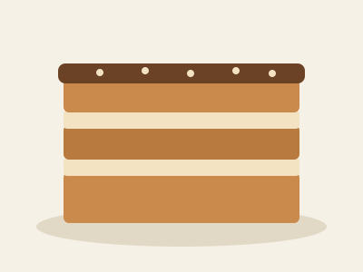

Bolo de bolacha
Publicada a
Uma sobremesa portuguesa clássica, sem forno. Fica pronta em 30 minutos, mais umas horas no frigorífico.

Ingredientes
- 200 g de bolacha Maria
- 250 g de manteiga sem sal, à temperatura ambiente
- 200 g de açúcar
- 2 gemas
- 1 chávena de café forte, frio
Preparação
- Bater a manteiga com o açúcar até ficar um creme claro.
- Juntar as gemas, uma a uma, sem parar de bater.
- Passar as bolachas pelo café e fazer uma camada no prato.
- Cobrir com creme e repetir:
- bolacha
- creme
- bolacha… até acabarem.
- Guardar no frigorífico pelo menos 4 horas.
Dicas
- Bolacha Maria
- Bolacha seca e redonda; qualquer bolacha de água e sal não serve.
- Café
- Frio, senão a bolacha desfaz-se.
O bolo de bolacha na Wikipédia (abre num separador novo)